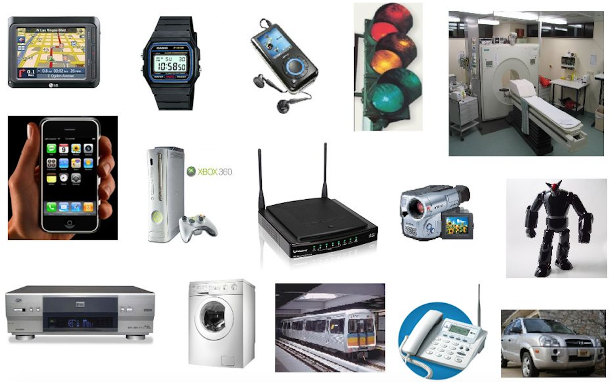

|
ECE 4501/6501 - Fall 2018
Advanced Embedded Systems

Source
More than 90% of manufactured microprocessors go inside airplanes, automobiles, medical devices, digital cameras, appliances, and buildings. Embedded systems are special-purpose computers that are tightly coupled with electronic and physical components and must often operate within real-time performance, battery, and size constraints.
What are the building blocks of an embedded system? How can we design an embedded system and make sure our system satisfies specific functionality, reliability, and usability requirements?
This course will help you answer these questions by providing the foundational knowledge and hands-on experience in design and validation of embedded systems, with a focus on embedded C programming and real-time operating systems for ARM® Cortex™-M Microcontrollers.
Topics:
- Embedded system architectures
- Embedded input and output (I/O)
- Serial and parallel I/O
- Interrupts
- Asynchronous vs. synchronous interfaces
- Analog I/O
- Embedded software development
- Embedded C programming
- Memory management
- Toolchains, debugging and profiling
- Real-time operating systems
- Thread and process management
- Interrupt handling
- Real-time scheduling
- Quantitative analysis and validation
In the second half of the class, we will explore related topics in safety and security, cyber-physical systems (CPS), internet of things (IoT), and robotics, through paper presentation/discussions and group projects.
|